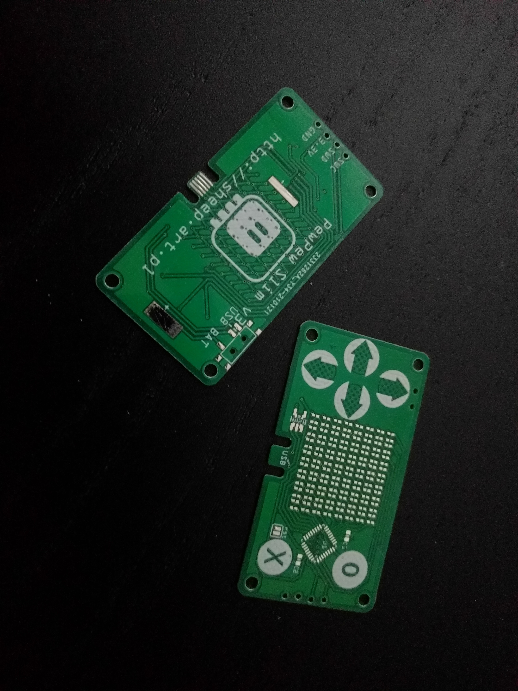
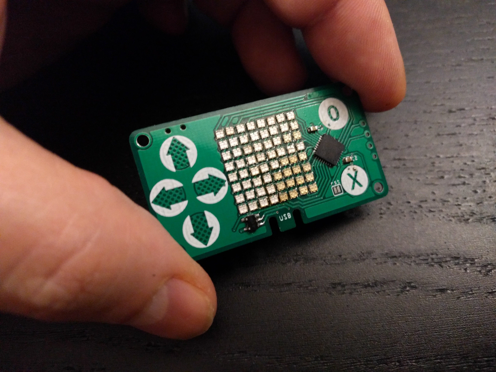
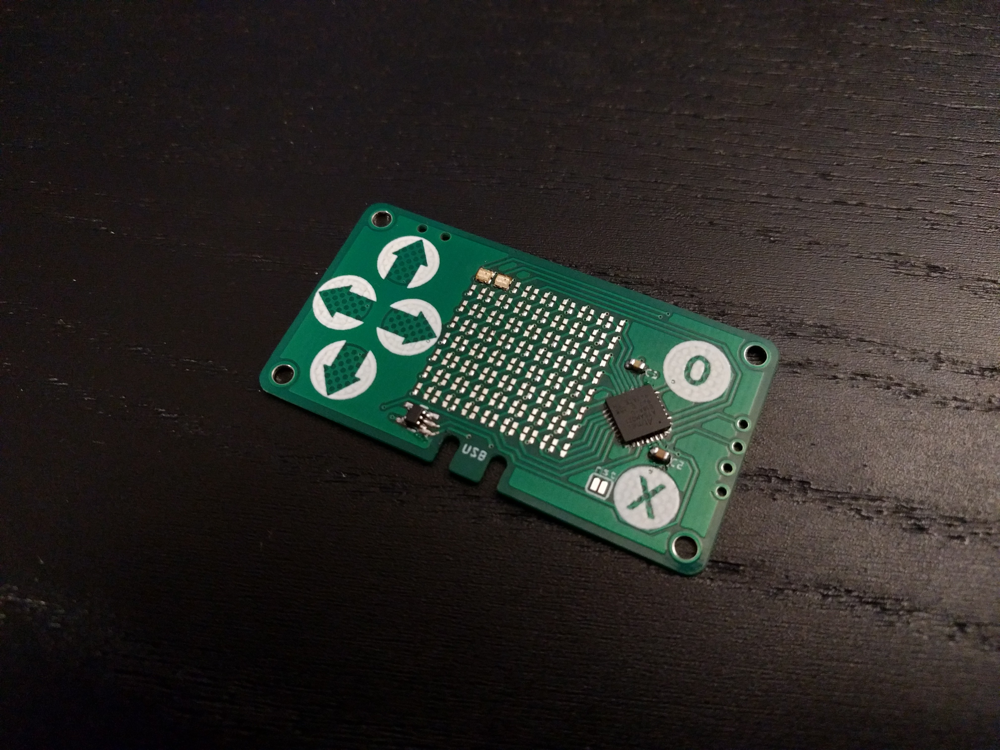

The Assembly¶
Published on 2021-02-04 in PewPew Slim.
You would think this is the perfect case for the SMT Assembly service offered by JLCPCB — all components on one side, no sockets, a lot of tiny parts that are best assembled by a machine. Unfortunately, they don’t do 0.6mm boards, and that’s a hard requirement here. Also, their service doesn’t accept Fritzing’s PNP files, so I would have to write one manually, specifying the placement of all the 64 LEDs. So I decided that I will try and assemble at least one prototype by hand, using a hot air gun.
Even before I started the assembly, I noticed a small problem — there is an extra trace in the LED matrix on the bottom side, connecting two rows that should not be connected. Can you spot it? In any case, a quick cut with a knife solved that. The final version will have that fixed, of course.
Another problem I noticed is that the footprint for those LEDs, which was recommended by the Aliexpress seller, is really a minimal footprint, with nothing sticking out from under the LED. That means that hot air is the only way I can solder it. Next version will have minimally larger pads, as much as space permits.
I didn’t yet have the smaller LDO, so I made the footprint for it double, so that I can use either the larger or the smaller one. I’m using the larger one during the tests, later the smaller one arrived and I replaced it. The final version will only have the smaller footprint.
Finally, I’m not happy with the vias inside the microcontroller footprint. This chip has a thermal pad, and the solder mask that JLCPCB uses is really thin and easy to scratch, so I’m worried about shorts in there. For now I put a bit of kapton tape there, but that makes the chip sit a bit higher than it should. I will have to see if I can somehow move that.
My first approach to the assembly was optimistic. I just tinned the pads, heated the solder with the gun and placed each of the LEDs. I had two stripes of 50, that’s why you can see two different colors in there — whiter and more yellowish. I expected some of the LEDs to not work and have to be reworked, but I didn’t expect what actually happened.
I flashed the firmware with the code for the old PewPew Standalone — it should work, it would just use only one side of the LEDs, with one color. Once I have that working, I can work on improved code that would handle both colors. Unfortunately what I got as a result is quite random. Multiple LEDs on both rows and columns seem to be shorted together, lighting up in groups and in random colors. I guess my soldering job was worse than I expected.
So now I’m doing a second attempt.
I wrote this simple test program, that lights up each LEDs in each color for a short moment:
import board
import digitalio
import time
_rows = (
digitalio.DigitalInOut(board._R1),
digitalio.DigitalInOut(board._R2),
digitalio.DigitalInOut(board._R3),
digitalio.DigitalInOut(board._R4),
digitalio.DigitalInOut(board._R5),
digitalio.DigitalInOut(board._R6),
digitalio.DigitalInOut(board._R7),
digitalio.DigitalInOut(board._R8),
)
_cols = (
digitalio.DigitalInOut(board._C1),
digitalio.DigitalInOut(board._C2),
digitalio.DigitalInOut(board._C3),
digitalio.DigitalInOut(board._C4),
digitalio.DigitalInOut(board._C5),
digitalio.DigitalInOut(board._C6),
digitalio.DigitalInOut(board._C7),
digitalio.DigitalInOut(board._C8),
)
for row in _rows:
row.switch_to_output(value=0)
for col in _cols:
col.switch_to_output(value=1)
time.sleep(0.25)
col.switch_to_input()
row.switch_to_output(value=1)
for col in _cols:
col.switch_to_output(value=0)
time.sleep(0.25)
col.switch_to_input()
row.switch_to_input()
Now I am soldering one LED at a time and running the test after each. Obviously this is taking much more time, and is much more work, but hopefully I only need to do it once to get the prototype to work. Once I have the firmware ready, the next version with larger pads can be assembled in a fab, with solder paste, stencil and a pnp machine.